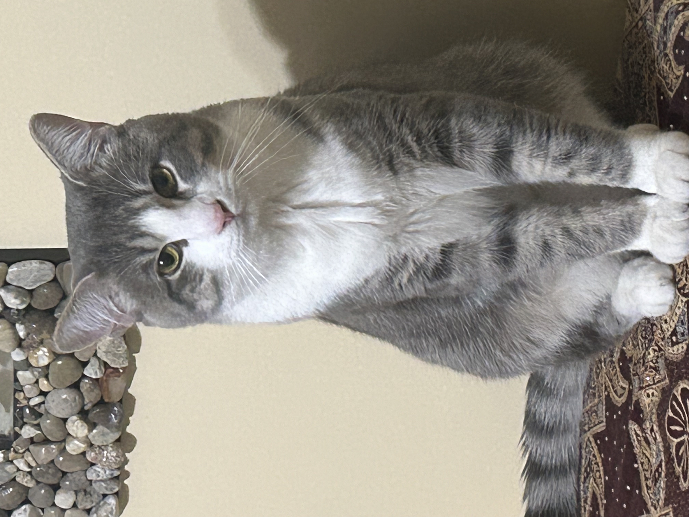

Bacon Q Dog

Bacon Q. Dog is a 9yr old labradoodle. He prefers to spend his days lounging among the three different beds/couches that his family has gifted him. He enjoys a walk or two around the neighborhood, as long as he can pretend that he doesn't see any of the other animals to avoid the embarrassment of not wanting to admit he has no wolf-like skills in chasing them.
At night just as the rest of the family is ready to relax, Bacon suddenly wants to release all of his energy. He will place his toys on a mini couch and frantically drag the couch around, giving his toys "a ride." There is also a lot of rolling. Lots and lots of rolling.
Photo Gallery


Likes
- Belly rubs
- Playing tug-of-war
- Sneaking onto the couch
Sprout The Cat

This is Sprout as a kitten, in the new home, in their first photo together with Kai.
Sprout, a shy and elusive kitten when he first arrived at four months old, gradually became an affectionate companion. He enjoyed sleeping on my bed, but his early morning wake-up calls at 6:30 AM were a daily routine.
During my challenging academic phase, Sprout became my constant companion during late-night drawing sessions, quietly curling up on my lap, providing comfort and banishing solitude.
Photo Gallery


Likes
- Egg
- Playing with Naer and my tennis string
- Sleeping in the sunshine
Maple the Cat

Maple is a 2 year old tabby cat with brown stripes. She is very playful and friendly but also loves lounging in the sun! Maple is a huge fan of treats - she has even learned how to open doors to steal some extra treats.
Sometimes Maple has boundless energy. At night, she gets the zoomies after eating her final meal of the day. It usually takes her another hour to settle down before she can take a long nap.
Photo Gallery


Likes
- Belly rubs
- Treats
- Stretching her paws
Smoothie The Cat

Smoothie has been dubbed the "world's most photogenic cat", and her emerald eyes and golden fur have even inspired a mural in New Zealand. Smoothie also has an aptly-named brother named Milkshake, and the two are often featured together across social media platforms.
She became an internet sensation with 2.3 million followers on her smoothiethecat Instagram account.
Photo Gallery


Likes
- Playing
- Sleeping under the sunshine
Lulu the Guinea Pig

Lulu is a lively guinea pig who enjoys eating carrots and peppers. When not given any carrots or peppers she will squeak.
Lulu is very adventurous, she will explore her surroundings looking for food and is not afraid.
Photo Gallery


Likes
- Peppers
- Sleeping
- Carrots
Brul the Cat

Brul is a 2yr old Maine coon cat. She prefers to spend his days lying in the bed. She enjoys watching outside from the window as long as there are no loud noises and bugs outside.
Brul loves walks on the beach and taking sun naps on a warm summer day. Brul is a playful cat but enjoys having slow, relaxed days at the same time. She hates grooming and bathing.
Photo Gallery


Likes
- Eating
- Sleeping
- Scratches
Earl the Cat
Earl is a gray cat who loves playing hide and seek! He is very friendly but does not enjoy being picked up! You can find Earl hiding behind a corner, or trying to knock things off the mantle.
Photo Gallery


Likes
- Hide and Seek
- Knocking things off the mantle
- Being pet